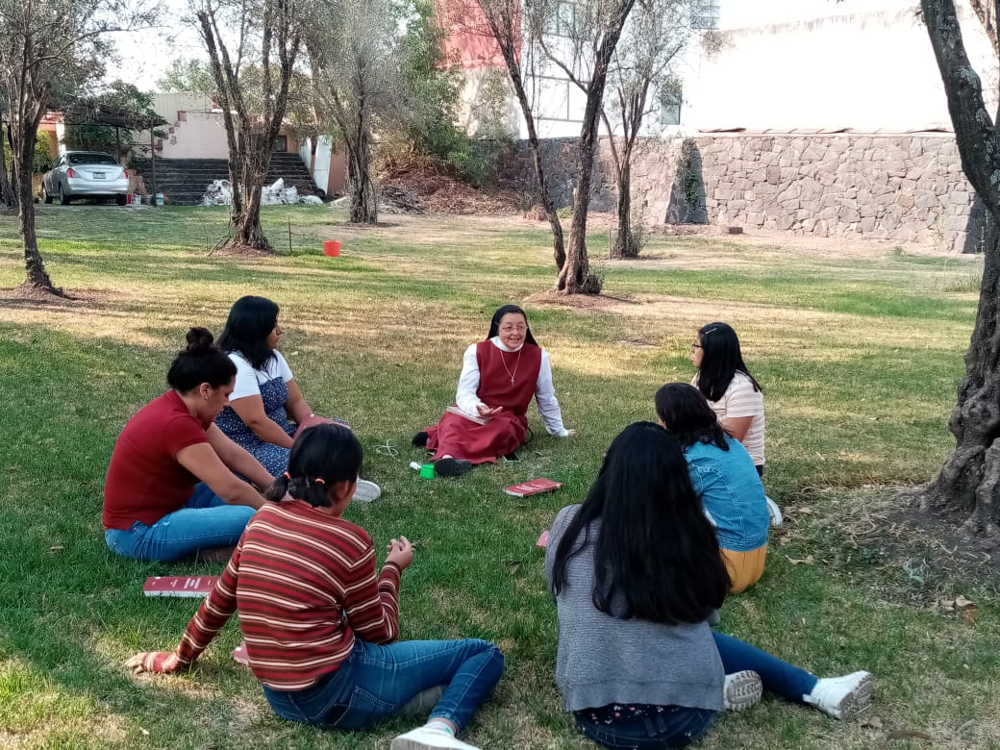
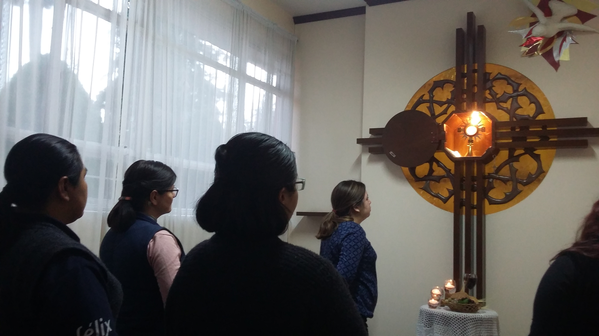

"But the hour is coming, and is now here, when true worshipers will worship the Father in Spirit and truth; and indeed, the Father seeks such people to worship him." Jn 4:23
Welcome to our community
We are committed to serving God by imitating Christ, drawing strength from the Eucharist in every aspect of our lives, and spreading joy throughout the world.

Service
Imitating Christ through humble action.

Eucharist
Our source of strength and life.

Joy
Spreading God's light to the world.
IS GOD CALLING YOU?
"Have you ever wondered if offering your life to Christ in service of others is worth it?"
Join us